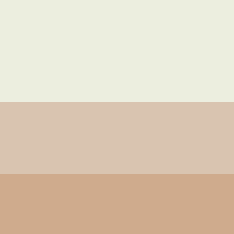

Gamen
Een van mijn favoriete dingen om te doen in mijn vrije tijd is gamen. Ik speel veel verschillende games, maar vooral FIFA. Ik speel dit op mijn Playstation of computer. Ik speel vaak met vrienden en met familie.
Huisdier
Ik heb een kat, hij heet Mous en is 3 jaar oud. Hij is heel actief en is vaak buiten. Verder 'praat' hij altijd veel als hij weer binnen komt nadat hij een hele dag buiten is geweest. Mous heeft altijd honger.

Werk
Ik heb een bijbaantje bij de Albert Heijn. Hier werk ik tussen de 2 en 6 uur per week. Meestal help ik met vakkenvullen en klanten helpen. Omdat ik niet zoveel werk, kan ik dit goed combineren met school.
Kleuren
Dit zijn de kleuren die ik heb gebruikt voor mijn website.
